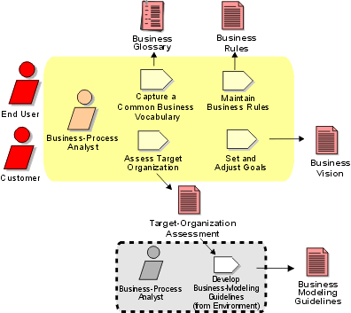

Disciplines >
Disciplines >
 Business Modeling >
Business Modeling >
 Workflow >
Assess Business Status
Workflow >
Assess Business Status
Disciplines >
Business Modeling >
Workflow >
Assess Business Status
Workflow Detail:
|
Topics |
 |
The purpose of this workflow detail is to:
The primary artifacts produced to achieve this purpose are the Target-Organization Assessment and the Business Vision.
Your business-modeling team, all of whom act as Business-Process Analysts, invites the stakeholder’s representatives to understand the problem to be solved and the character of the business domain of the target organization. This extended business modeling team needs to cover good business domain knowledge and also know how current systems are used to automate the business. The core team needs to have good facilitation skills.
If business modeling is done with the intention of reengineering an existing organization, it’s very important to involve those people who will work at this task in the new organization. First, these people know how things work; they are the best sources of ideas for improvement. Second, they must feel that they are part of the work because they are going to "own" the new organization.
There are at least three ways to involve those people who are going to work in the new organization in the envisioning work:
Developing the Business Vision is the task of a business-modeling team It can be done through a series of workshops, with the follow-up work done by individuals. Facilitate a workshop where the goal is to determine the scope of the business-modeling effort. The following sample techniques can be applied to help you collect correct and relevant information:
The decisions you make about how to use the business modeling discipline's workflow and
the vision of the future target organization are closely related. Depending on
what you want to achieve, the approach you take to business modeling may be
more or less comprehensive. Typically, the first iteration of a project—in
the inception phase—focuses on producing the Target-Organization
Assessment, and only briefly outlines the Business Vision. During the
elaboration phase, you will revisit the Business
Vision and the Activity: Set and
Adjust Goals to make them more complete.
|
Rational Unified
Process
|